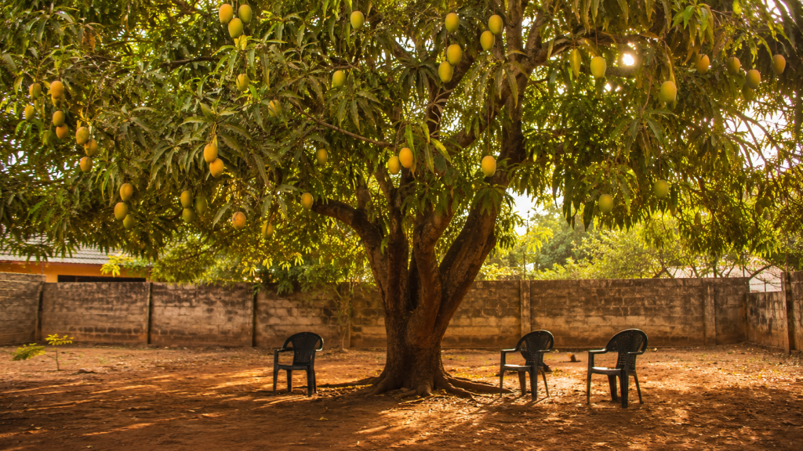

Somewhere in a compound near you, the most productive, most generous, most catastrophically underappreciated employee in Nigerian history is standing quietly in the sun. It has been there for decades. Nobody has said thank you. Not once.

Every year, billions of naira change hands in Nigeria’s food economy. Trucks move. Markets fill. Middlemen profit. And somewhere in the middle of all of it, largely ignored by everyone, the mango tree is doing what it has always done. Growing fruit. Dropping it. Feeding whoever is standing beneath it. Asking for absolutely nothing in return.
No salary. No cold chain. No customs duty. No diesel. The most efficient farm to table operation in Nigerian food history is run by a tree nobody planted on purpose, nobody manages professionally, and nobody has ever put on a spreadsheet. We found the CV. It is, frankly, embarrassing. Not for the mango tree. For the rest of us.
Mangifera indica
Senior Fruit Producer, Shade Provider, Soil Anchor, Carbon Vault, and Childhood Memory
Location: Your compound, or your neighbour’s compound, or that corner by the school fence that everyone pretended not to notice | Available: July, mostly | Compensation expected: None. Has never expected any. This is part of the problem.
Personal Statement
I am a results-driven perennial with over thirty years of continuous food production experience across residential, agricultural, and roadside environments. I work independently, require no supervision, and have never once missed a season. I bring my own water, manufacture my own food through photosynthesis, and provide a comprehensive suite of environmental services at no additional cost to the client. I have not received a performance review. I have not received any review. I have not received anything. I am still here. I am still producing. I would, however, appreciate not being cut down for a car park.
Work Experience
Chief Fruit Supplier and Head of Shade Operations
Omotosho Family Compound, Lagos State | 1987 to Present | 39 years continuous service
Supplied between 200 and 400 mangoes per season for 39 consecutive years without a single logistics failure, import waiver, or diesel-powered cold chain. Provided uninterrupted shade coverage for naming ceremonies, family meetings, Sunday afternoons, two weddings, one very long argument about land inheritance, and approximately 4,000 naps. Simultaneously anchored the compound soil, reduced ambient temperature by up to 8 degrees Celsius, intercepted dust from the road, and sequestered carbon the entire time. This was not in the job description. There was no job description. I wrote my own.
Key Achievements
Survived the 2005 drought, three separate proposals to cut me down, one structural renovation that removed two of my primary roots without consultation, and a teenager who carved initials into my bark in 2011. I have not forgotten this. I am still producing fruit for that family. I am a professional.
Became the most referenced location in the family’s collective memory. Every story that begins with “remember when we were under the mango tree” is, technically, about my workplace. I have appeared in no family photographs. I am in every family photograph.
Skills
Year-round canopy provision, High-volume fruit production, Zero-input operation, Soil stabilization, Carbon sequestration, Temperature regulation, Flood mitigation, Working well under pressure, Working well under children, Excellent references (the family, reluctantly)
Reason for Leaving
The uncle had a plan. There is always an uncle with a plan. The plan involved concrete. It did not involve me. No notice. No severance. No acknowledgement of 39 years of continuous, uncompensated, essential service. They did not cry when I was standing. They cried when I was gone. I produced a particularly good harvest that final July anyway. I am a professional.
References
The Omotosho family. All eight of them, plus the extended relatives, plus the neighbours, plus the children from three streets away. They will all tell you I was essential. None of them will be able to explain why they did not say so while I was still there to hear it.
Curriculum Vitae prepared posthumously. Candidate is no longer available. Position has not been filled. The compound is hotter now.
Nigeria has a food security problem, a post-harvest loss problem, and an import dependency problem. It also has a mango tree problem. Not a shortage of them. A shortage of people who understand what they are worth before they are gone.
At Exploreland Farms, we think about trees the way the Omotosho family eventually thought about theirs. We just try to do it while they are still standing.
Plant one. Protect one. And the next time someone arrives with a plan, ask them one question first.
What exactly are you going to replace it with?